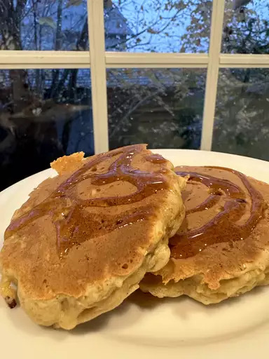

Apple Fritter Pancakes

Sweet and Savory Pancakes
Apple fritter pancakes make a wonderful breakfast topped with some warmed maple syrup and served with some breakfast meats. Enjoy the sweet and savory delight of
the Honeycrisp apple with these pancakes and you won't regret it.
Ingredients
- 1 large egg
- 1 tablespoon white sugar
- 1/8 teaspoon ground cinnamon, or to taste
<1i>1 pinch ground ginger
- 1 pinch nutmeg
- 1/4 teaspoon kosher salt
- 1/8 teaspoon pure vinalla extract
- 1 cup shredded apple
- 1 teaspoon lemon juice
- 1/2 cup all-purpose flour
- 1/4 teaspoon baking powder
- 1/8 teaspoon baking soda
- 2 tablespoons melted butter
Steps
- Combine egg, sugar, cinnamon, ginger, nutmeg, kosher salt, and vanilla extract in a bowl. Whisk until well combined and lightly foamy.
- Add shredded apple and lemon juice and fold in with a spatula until well combined. Add flour, baking powder, and baking soda. Mix until flour disappears and batter is thick yet spoonable.
- Melt butter in a skillet over medium heat. Add tablespoonfuls of apple batter to the hot butter and cook until browned, about 3 minutes.
- Turn and cook until apple pancakes spring back to the touch and are browned on the other side, an additional 3 minutes.